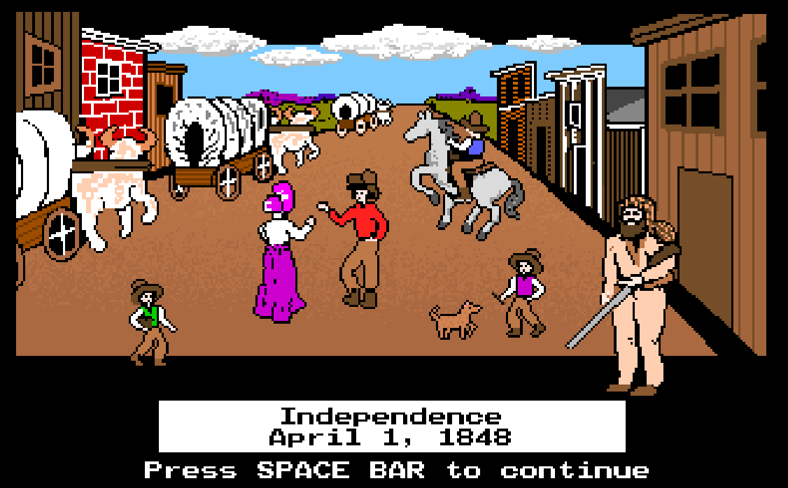
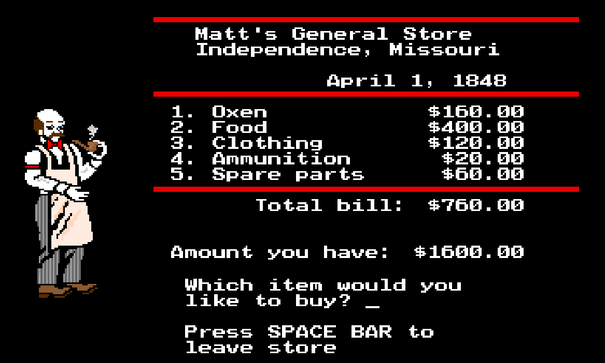
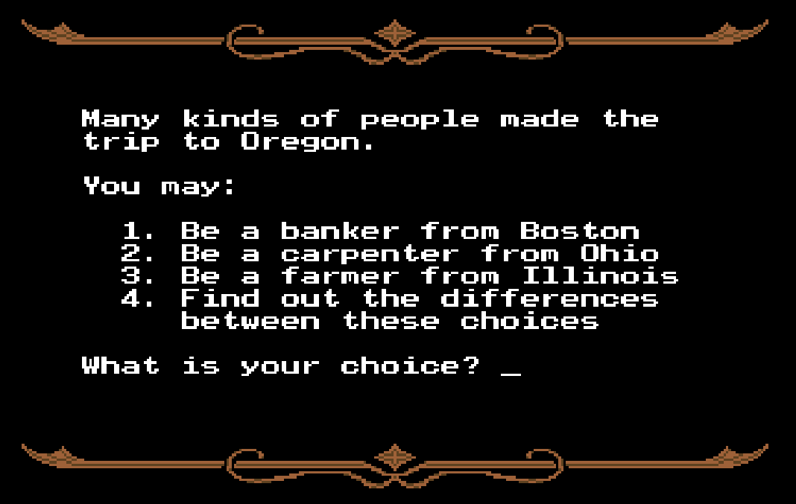

The graphics are extremely simple utilizing basic 8-bit limited color palet and pixelized characters, animals, scenery, wagon, rivers, forts, and landmarks. Even with the limited graphics, the text-based formatting of the game allows you get the sense of adventure wondering what the next landmark, illness, or issue will occur next.
The settings are minimal, there are no sounds to the game but you can control how much the group eats (“filling”, “measly”, “barely”) but that is about all. You travel along a linear path from Missouri to Oregon passing key landmarks, rivers, and forts. You are not able to explore anything around the landmarks but can shop at local stores at the forts to replenish supplies.
You are placed in the role of leader. You enter your name and select your profession but have no true characteristics. You can also name the rest of your party but do not control them. What you can control is the management of the entire party’s health, supplies, and pace. The NPC players are people or Native American Indians in the forts. You can talk to a player chosen by the game who will usually tell you something about the town or culture.
The main challenge is ensuring that your party has adequate food and supplies, and are travelling at the correct pace. Going too fast can cause exhaustion and illness (which can lead to the death of party members) but going too slow will deplete food resources and supplies before the ability to restock presents itself.
There are no objects that you can directly observe or pick up. You are able to trade at the forts to gain supplies without having to purchase them. The objects you cannot continue without are: oxen, wagon wheels, wagon axles, and wagon tongues.
The game does not really break the fourth wall or comment on itself. It’s a straight play simulation.
The game reflects on the historical pioneer experience of the westward expansion in 19th century America. It touches on themes of survival and manifest destiny. By today’s standards, the game lakes representation. The main characters are implied to be white settlers. There are some interactions with Native Americans throughout the game, someone of which state their distaste of their lands being disrupted by the influx of settlers.
There have been some remakes to the Oregon Trail game but some changes to improve the game would be: